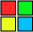
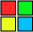

Spalva
Spalvų gradientas gali būti linijinis arba radialinis (apskritas) ir gali apimti daugybę spalvų ir pakartojimų. Galima nurodyti neskaidrumo stadijas.

Spalvų gradientas gali būti linijinis arba radialinis (apskritas) ir gali apimti daugybę spalvų ir pakartojimų. Galima nurodyti neskaidrumo stadijas.
Nuo 2008 m. Profesionalūs SVG vartotojai diskutavo, ar prie SVG atvaizdavimo specifikacijos galėtų būti pridedami gradientų laipsniai. Kiekviena difuzijos kreivė padalija 2D grafikos erdvę, per kurią ji brėžiama, apibrėždama skirtingas spalvas iš abiejų pusių.
Sakoma, kad „paprastas vaizdavimas (naudojant difuzijos kreives ( vektoriniai grafiniai primityvai, skirti sklandžiai šešėliniams vaizdams kurti.)) gali atspindėti net labai subtilų šešėlio efektą“ ir kad „Difuzinės kreivės vaizdai yra palyginami tiek kokybe, tiek kodavimo efektyvumu su gradiento laipsniais.
Tačiau yra lengviau sukurti ( pagal keletą menininkų, kurie naudojosi abiem priemonėmis) ir gali būti visiškai automatiškai užfiksuoti iš bitmaps “. Dabartiniame SVG 2 projektai pateikiami su gradiento laipsniais.
Menininkai paprastai pradeda brėžti linijas ir formas, kurios vaizduoja pagrindines spalvų ribas. Difuzijos kreivių taikymas tiksliai palaiko šią praktiką: kadangi spalva būtų pridedama vėliau, iki šių eskizuotų linijų ir tarp jų, todėl nurodomos spalvų linijos vertės ir jų „difuzijos tipo“ elgesys sukuria panašų vaizdą į būdas kokiais menininkai dirba su teptukais ar kitomis priemonėmis.

Dauguma paveikslo spalvų ir tonų spektro, nesvarbu rankiniu būdu piešiami ar fotografuojami - prasideda nuo krašto. Subtilesnis šešėliavimas taip pat gali būti vaizduojamas taip, tarsi jį būtų pagrindas kraštai. Todėl regėjimo analizės metodai, tokie kaip kraštų aptikimas, gerai integruojami į difuzijos kreivių sudarymą, todėl jie gali palengvinti realių vaizdų vektorizavimą ir vėlesnį jų taisymą rankiniu būdu.
Kiekviena difuzijos kreivė padalina 2D grafikos erdvę, per kurią ji brėžiama, apibrėždama skirtingas spalvas iš abiejų pusių. Tuomet šios spalvos išplinta į regionus abipus kreivės pusėje tokiu būdu, analogiškas difuzijai. Taip pat gali būti apibrėžtos spalvos, kurios sklandžiai kinta išilgai kreivės ir gali būti nurodytas spalvų perėjimo iš vienos kreivės pusės į kitą, ryškumas.